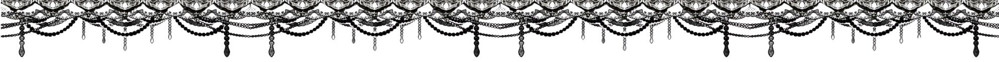
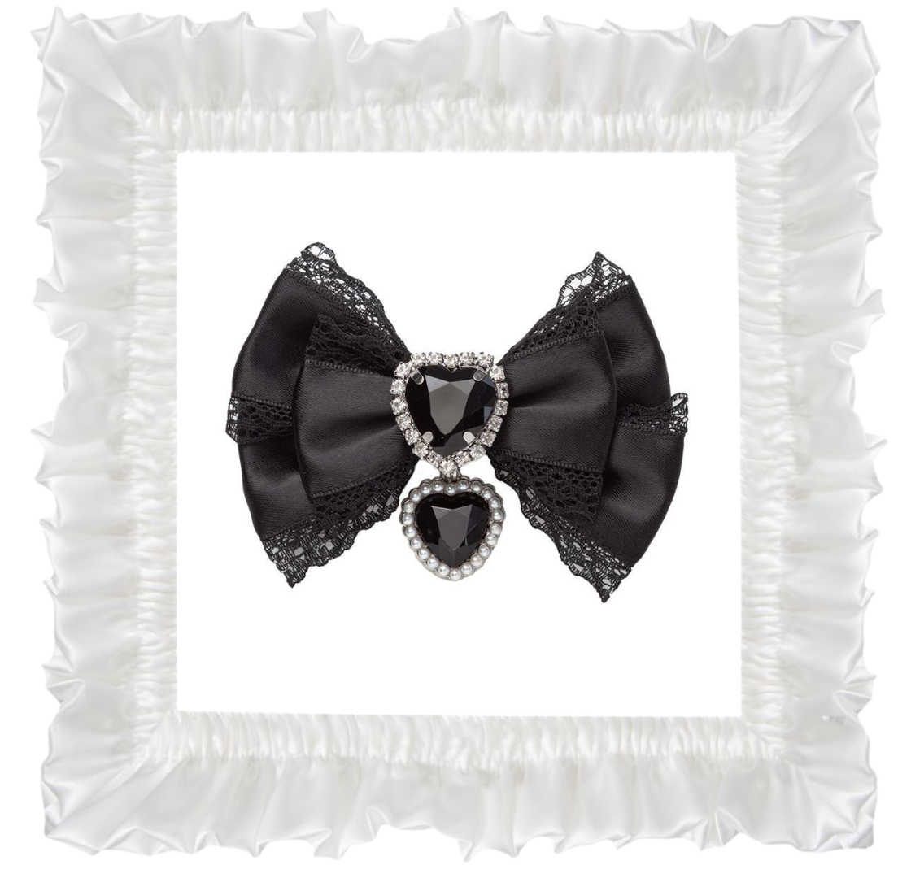
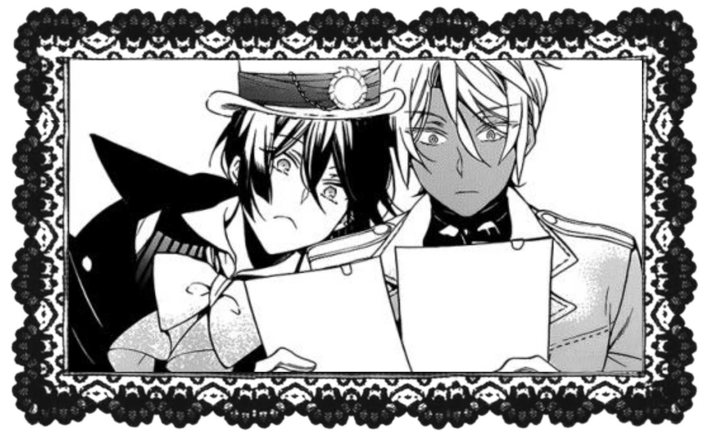
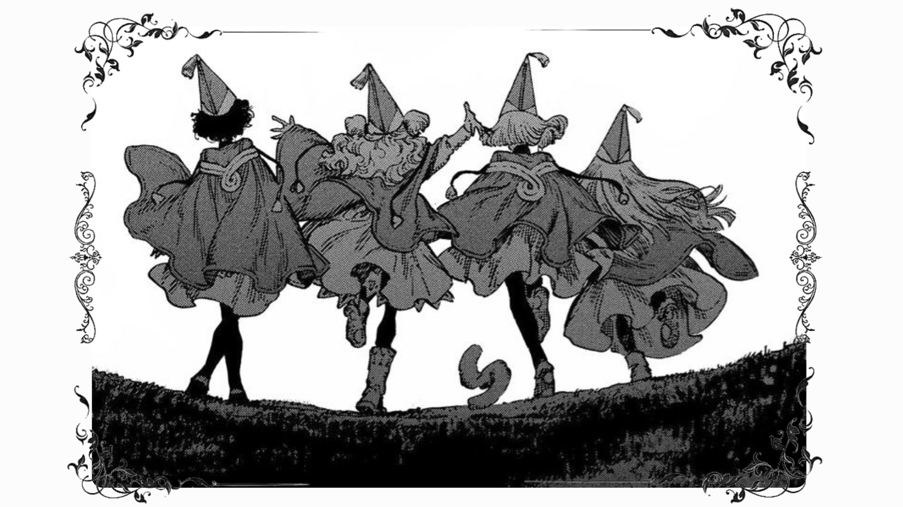

About Me! ⸜(｡˃ ᵕ ˂ )⸝♡

Introduction⊹ ࣪ ˖ ໒꒱
This is my first time creating a website! I'll be talking about my interests, hobbies and fandoms.✩
My favourite things to do are reading (mostly manga, but sometimes chapter books but drawings are pretty and better), playing video games, my favourites are Genshin Impact and Twisted Wonderland, and drawing fanart!. I also like to papercraft, and do oshikatsu activities like making ita bags and rosettes for my badges.
⊹₊˚‧︵‿₊୨✩୧₊‿︵‧˚₊⊹
Manga!!! (๑ᵔ⤙ᵔ๑)
My favourite manga series is Toilet-Bound Hanako-kun. I really like how they handled the angst by somethimes mixing comedy into it to make easier to handle since it involes very dark themes. The world and character writing is very compelx and realisic. I really like Aida's artstyle, it's actually what got me into drawing in the first place! Toilet-Bound Hanako-kun was also the start to my supernatural rabbit hole, you can see it since most of the other fandoms I'll be mentioning are related to the supernatural.
Video Games!♡
I only play two video games regularly, Genshin Impact and Twisted Wonderland.I also play Honkai Star Rail but I don't play it much and its been a year since I last opened it. Like I said eariler, my favourite games are both Genshin and TWST since I love them both equally! I've been playing Genshin Impact for around 4 years and my favourite charcters are Lohen and Illuga (also my favourite ship)! They're the reason why I came back to the game after not playing it for a year. I haven't been playing TWST for long, like around a month, but I love the charcters already. They're so unique and well written! I love the ghosts that live in Ramshackle dorm, its sweet how they're like family to the Yuu and Grim, even though they did scare them at the start. My favourite characters are Riddle, Epel and Lilia. I find it funny how Lilia is a father of two and a war veteran while looking like a 12 year old (he's a fae), and how Epel's name is Epel becuase it sounds like apple (He's based off of snow white's poison apple). Out of all three, I like Riddle the best because of his really cute and smart desgin and his very good charcter writing. His story is so sad.✦ ݁˖


Other Fandoms (๑>•̀๑)
- Bungo Stray Dogs
- The Case Study of Vanitas
- Shadows House
- Pandora Hearts
- Witch Hat Atelier
- Black Butler
- Make the Exorcist Fall in Love
- The Reincarnated Villainess' Dark History
